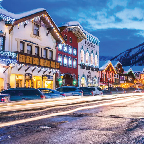

Welcome to Washington!
Washington, officially the State of Washington, is a state in the Pacific Northwest region of the United States. It is often referred to as Washington state to distinguish it from the national capital, both named for George Washington (the first U.S. president). The state was formed from the western part of the Washington Territory, which was ceded by the British Empire in the Oregon Treaty of 1846.
| amazon | Space Needle | Mt. Rainier |
|  | ||
| Leavenworth | deception-pass | Snoqualmie Fall |
Washington is bordered by the Pacific Ocean to the west, Oregon to the south, Idaho to the east, and the Canadian province of British Columbia to the north. It was admitted to the Union as the 42nd state in 1889. Olympia is the state capital, while the most populous city is Seattle.
Washington is the 18th-largest state, with an area of 71,362 square miles (184,830 km2), and the 13th-most populous state, with more than 7.7 million people. The majority of Washington's residents live in the Seattle metropolitan area, the center of transportation, business, and industry on Puget Sound,an inlet of the Pacific Ocean consisting of numerous islands, deep fjords and bays carved out by glaciers.
The remainder of the state consists of deep temperate rainforests in the west; mountain ranges in the west, center, northeast, and far southeast; and a semi-arid basin region in the east, center, and south, given over to intensive agriculture. Washington is the second most populous state on the West Coast and in the Western United States, after California. Mount Rainier, an active stratovolcano, is the state's highest elevation at 14,411 feet (4,392 meters), and is the most topographically prominent mountain in the contiguous U.S.
Source: https://en.wikipedia.org/wiki/Washington_(state)